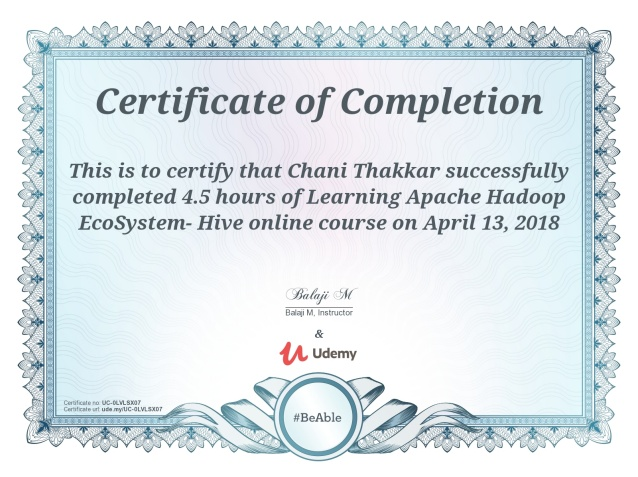
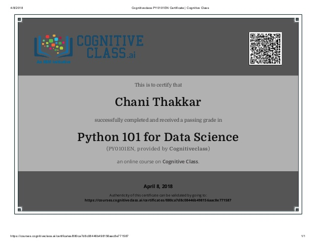
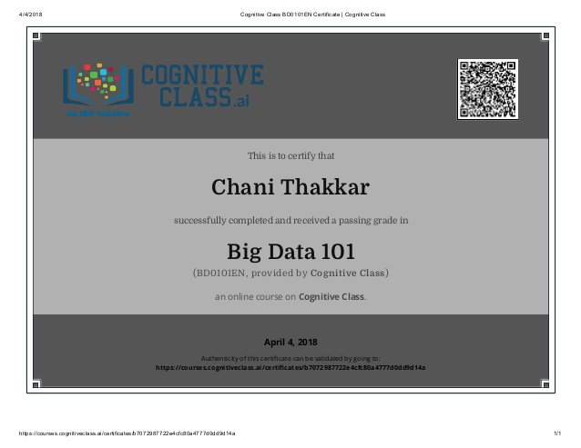
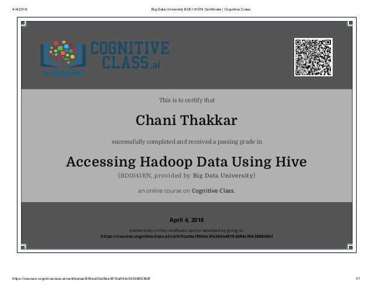

{% include quote.html quote=page.quote author=page.author %}

<div class="row resume-wrapper">
    <p>
        <a href="https://ude.my/UC-0LVLSX07" target="_blank"></a>
        <a href ="https://bit.ly/2JskOMz" target="_blank"></a>
        <a href ="https://bit.ly/2GEXc5K" target="_blank"></a>
        <a href ="https://bit.ly/2Jl5uRU" target="_blank"></a>
        <a href ="https://bit.ly/2JgDuyJ" target="_blank"></a>
        <a href ="https://bit.ly/2q2RCUg" target="_blank"></a>
    </p>
</div>